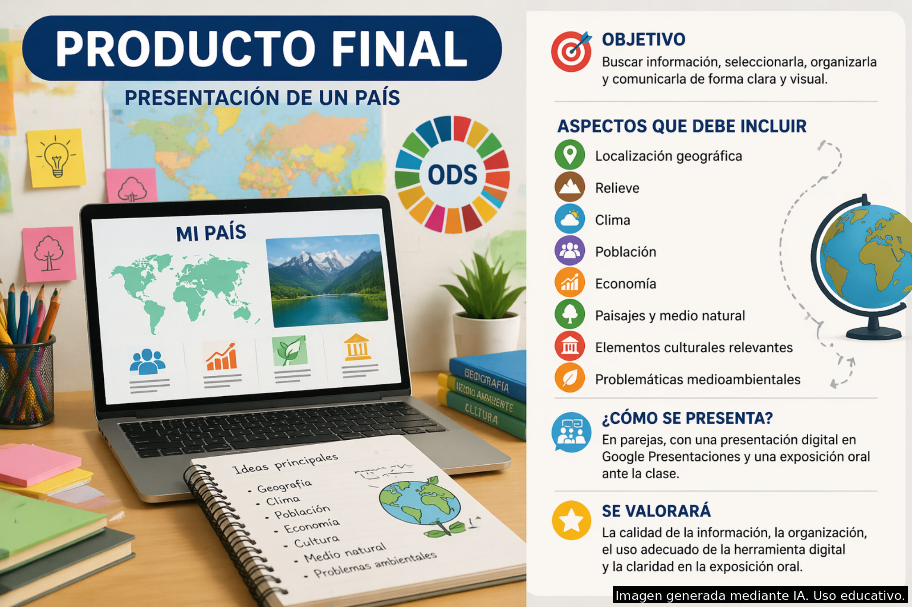

Para la elaboración del producto final de esta situación de aprendizaje se propone el uso de Google Presentaciones, herramienta que permitirá al alumnado realizar una presentación digital sobre un país, incluyendo contenidos geográficos como el relieve, el clima, la población, los paisajes, la economía, los Objetivos de Desarrollo Sostenible (ODS) y el medio natural.
El objetivo es que el alumnado sea capaz de buscar información, seleccionarla, sintetizarla, organizarla de forma visual y comunicarla oralmente apoyándose en un recurso digital sencillo.
La elección de esta herramienta se justifica por varios motivos. En primer lugar, su versatilidad, ya que permite integrar texto, imágenes, mapas y esquemas de forma clara, facilitando además la exposición oral. En segundo lugar, favorece el trabajo colaborativo, puesto que varios alumnos pueden trabajar en una misma presentación y el docente puede realizar un seguimiento del proceso a través del historial de versiones.
Asimismo, se trata de una herramienta accesible, ya que el alumnado dispone de cuentas educativas (g.educaand.es), lo que garantiza su disponibilidad en el contexto del aula. Además, es adecuada para alumnado de 12-13 años, al tratarse de una herramienta intuitiva que no requiere un alto nivel de competencia digital.
Por último, permite atender a la diversidad, ya que facilita la adaptación del contenido y del formato de la tarea en función de las necesidades del alumnado.
En definitiva, se trata de una herramienta eficaz, accesible y ajustada al contexto educativo, que favorece el desarrollo de la competencia digital y la comunicación oral.